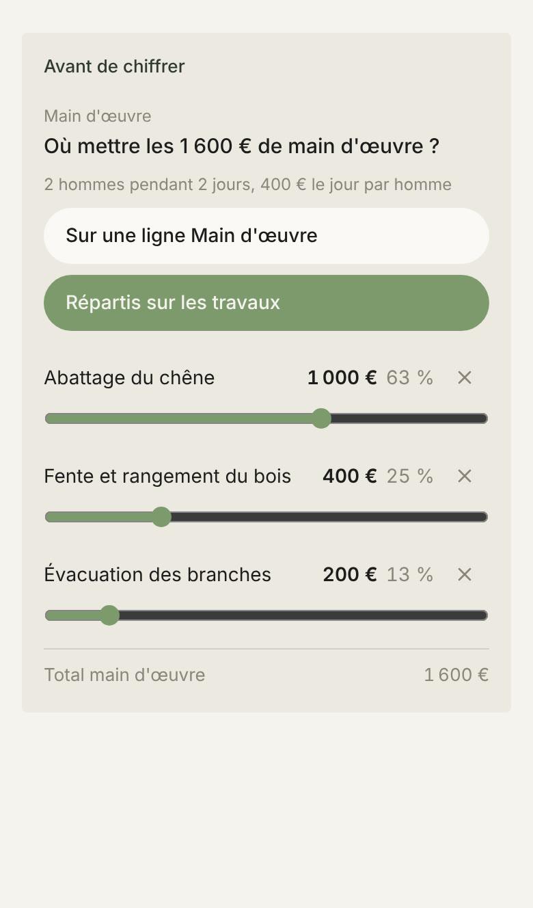

Proposé
La première proposition
Aujourd'hui

Ce qui change avec la première
- Une seule barre, qui est le total. Chaque travail en est un morceau, son montant écrit dedans.
- Une poignée entre deux travaux. La tirer ne change que ces deux-là : aujourd’hui, tirer un curseur fait bouger tous les autres.
- Les montants avancent de 10 € en 10 €, comme le devis les écrit. Aujourd’hui, ils avancent de 10 puis de 20.
- Plus de pourcentage. Aujourd’hui, les trois font 101 %.
Ce que la nouvelle soigne
- La répartition a sa propre plage claire dans la carte, et la barre est plus haute.
- Des poignées rondes accrochées sous le joint, qui ne cachent aucun montant, et la bulle qui pointe celle qu’on tient.
- Les noms des travaux dans l’écriture des titres, le montant à droite, une pastille ronde de la couleur du morceau.
- Le total en bas, dans l’écriture des titres. Retirer ou remettre un travail fait couler la barre.
Ce qui reste comme dans l’appli
- La carte Avant de chiffrer, la question, Sur une ligne Main d’œuvre ou Répartis sur les travaux.
- La croix qui rend un travail à sa grille, Remettre, et la phrase qui le dit.
À trancher
- Au doigt, 10 € font 2 mm de barre sur 1 600 €. Pour tomber pile sur un montant, je peux ajouter : toucher le montant d’un travail et le taper. Le travail d’à côté prend la différence.
Ce que montre Aujourd’hui
- Le vrai composant, rendu ici dans Chrome. Sur l’iPhone, le curseur est celui de Safari : même trait fin, poignée blanche.